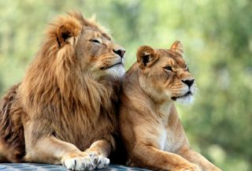

Sư tử :
Sư tử (Panthera leo), (tiếng Anh: Lion) là một trong những đại miêu trong họ Mèo và là một loài của chi Báo. Được xếp mức sắp nguy cấp trong thang sách Đỏ IUCN từ năm 1996, các quần thể loài này ở châu Phi đã bị sụt giảm khoảng 43% từ những năm đầu thập niên 1990. Trong văn hóa phương Tây, sư tử được mệnh danh là "chúa tể rừng xanh" (king of the jungle) hay "vua của muôn thú" (king of beasts).
Sư tử là loài dị hình giới tính; con đực lớn hơn con cái với phạm vi trọng lượng điển hình từ 150 đến 250 kg (330 đến 550 lb) đối với con đực và 120 đến 182 kg (265 đến 400 lb) đối với con cái, là loài lớn thứ nhì họ Mèo sau hổ. Sư tử đực có thể dễ dàng được nhận ra từ xa bởi bờm của chúng. Sư tử hoang hiện sinh sống ở vùng châu Phi hạ Saharan và châu Á (nơi quần thể còn sót lại cư ngụ ở vườn quốc gia Rừng Gir thuộc Ấn Độ), các phân loài sư tử tuyệt chủng từng sống ở Bắc Phi và Đông Nam Á.
Bờm
 Bờm của sư tử là đặc điểm dễ nhận biết nhất của loài. Nó bắt đầu phát triển khi sư tử khoảng một tuổi. Màu bờm thay đổi và tối dần theo tuổi; nghiên cứu cho thấy màu sắc và kích thước của nó bị ảnh hưởng bởi các yếu tố môi trường như nhiệt độ môi trường trung bình. Chiều dài bờm rõ ràng báo hiệu sự thành công trong các mối quan hệ xung đột giữa các con đực; Những cá thể có màu sẫm hơn có thể có cuộc sống sinh sản dài hơn và tỷ lệ sống của con non cao hơn, mặc dù chúng phải chịu đựng trong những tháng nóng nhất trong năm. Sự hiện diện, vắng mặt, màu sắc và kích thước của bờm có liên quan đến điều kiện tiên quyết di truyền, trưởng thành tình dục, khí hậu và sản xuất testosterone; theo một quy tắc là nếu bờm tối hơn, dày hơn cho thấy một thể trạng khỏe mạnh hơn. Trong Vườn quốc gia Serengeti, những con sư tử cái thích những con đực có bộ lông dày đặc và màu sẫm để giao phối. Mục đích chính của chiếc bờm được cho là bảo vệ cổ và cổ họng trong các cuộc chiến lãnh thổ với các đối thủ. Nhiệt độ môi trường mát mẻ ở các sở thú châu Âu và Bắc Mỹ có thể dẫn đến một bờm nặng hơn. Bờm của sư tử châu Á thường thưa thớt hơn sư tử châu Phi.
Sự khác biệt về màu sắc
Sư tử trắng là một hình thái hiếm gặp với một tình trạng di truyền được gọi là leucism được gây ra bởi một alen lặn kép. Chúng không phải là bạch tạng, chúng có màu này là do gen lặn (đây cũng là nguyên nhân sinh ra hổ trắng, rất nhiều hổ trắng với gen lặn được nhân giống cho các vườn thú và để biểu diễn); Nó có sắc tố bình thường trong mắt và da. Sư tử trắng thỉnh thoảng được bắt gặp trong và xung quanh Vườn quốc gia Kruger và Khu bảo tồn tư nhân Timbavati Game liền kề ở phía đông Nam Phi. Sư tử trắng không có ưu thế khi đi săn; màu trắng của chúng dễ làm lộ chỗ ẩn nấp rình mồi của chúng.Chúng đã được đưa ra khỏi tự nhiên vào những năm 1970, do đó làm giảm nguồn gen sư tử trắng. Tuy nhiên, 17 ca sinh đã được ghi nhận trong năm đàn từ năm 2007 đến 2015. Sư tử trắng được chọn để nhân giống trong điều kiện nuôi nhốt. Chúng được báo cáo đã được nhân giống trong các trại ở Nam Phi để sử dụng làm chiến lợi phẩm để giết trong các cuộc săn bắn.